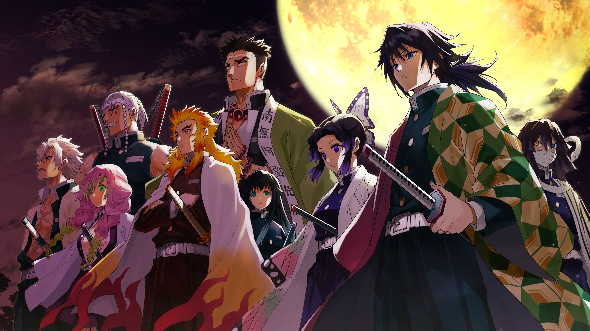

Mission
The Demon Slayer Corps is a organization that has existed since ancient times, dedicating its existence to protecting humanity from Demons. There are hundreds of Demon Slayers within the organization, however we are not officially recognized by the government.
Demonstrations
The Hashira Training is a special training session conducted by the Hashira and undertaken by numerous lower-ranked Demon Slayers. The aim of Hashira Training is to improve all Demon Slayers' physical abilities and overall health, giving the members of the Demon Slayer Corps a better chance of winning the war against Demons. Each of the Hashira oversees a different part of the training program. Known training includes basic stamina training, flexibility training, quick movement training, sword skill training, pounding training, and muscle reinforcement training.
 Learn more...
Learn more...

Demon Slayer News
#NEWS Demon Slayer: Kimetsu no Yaiba Mugen Train Arc premieres October 10th followed by Demon Slayer: Kimetsu no Yaiba Entertainment District Arc on December 5th on Funimation and Crunchyroll!
 Learn more...
Learn more...